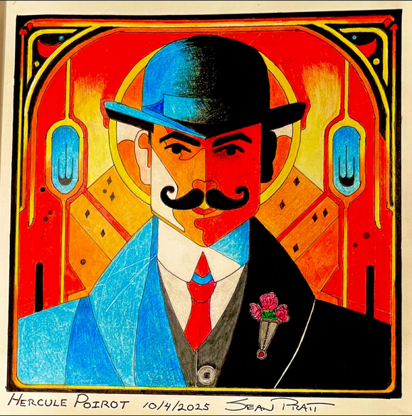
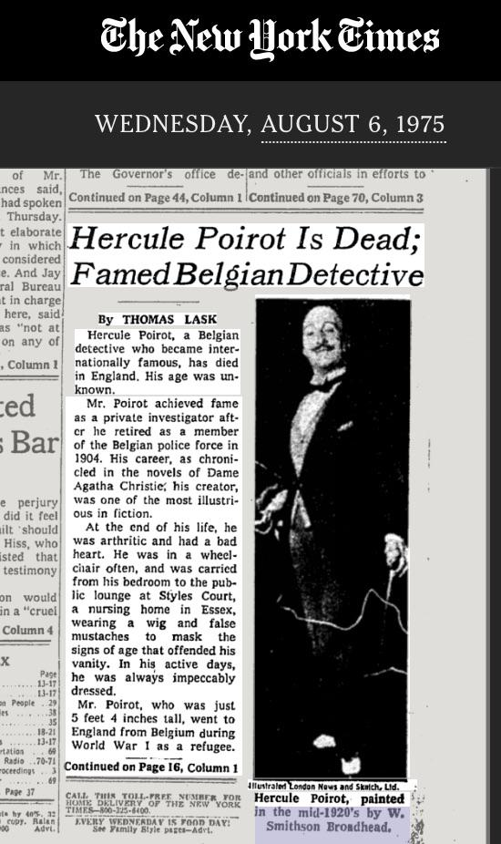

The World's Most Refined Detective


Commonly thought of as French, given his accent and common use of the French Language, Poirot was actually a world famous Belgian Detective, who could never seem to find any peace in his retirement. He was described as a meticulous and obsessive individual constantly straightening his mustache or hair, correcting table arrangements, even going so far as to brush dirt or flecks of dust off of others. He presents himself as a very proper and refined gentlemen, with the air of someone who knows more than he is willing to tell. The biggest distinction between him and Sherlock Holmes, however, is that while Holmes is known to go to any lengths to find evidence, even crawling on his hands and knees to detect the smallest scrap of details, Poirot does all of his work in his mind. He is famous for saying "It is the brain, the little gray cells on which one must rely. One must seek the truth within-not without". In his second novel Murder on the Links, Christie pits the Belgium against a distinctly Holmesian detective, I believe in an effort to differentiate her creation from Conan Doyles. You have to remember not only was Poirot created just after the end of Holmes, who had a very dedicated fandom, but the world would compare ANY new literary detective to the superstar that was Holmes. I personally believe she did a great job of distinguishing Poirot from Holmes, his stories often require two readings, as Christie was a master of keeping us in the dark while also leaving hints throughout the story, that aren't usually picked up until the second read. However, I think the true genius behind Poirots stories is the fact that even though Christie establishes and follows a distinct formula, we never know where she's going to go. Every story has multiple rug pulls, but never feels chaotic, nor does it feel predictable. And there in lies the genius of Poirot, no matter the chaos of the crime, his mastery of "the little gray cells" make him our raft in a raging sea.